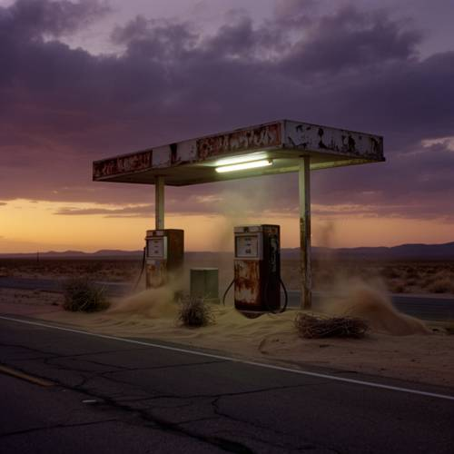

Style — At dusk, an abandoned gas station stands alone beside the desert road.
At dusk, an abandoned gas station stands alone beside the desert road. The wind and sand blowing against the rusty signs, presenting the bleak style of a road movie.


Judge — Direct
- PASSStyle — The image shows a desolate, abandoned gas station next to a road in a desert landscape during dusk. The lighting is low, the colors are muted, and the structures are rusty and decaying. This combination of isolation, decay, and the specific time of day creates a bleak, lonely atmosphere commonly associated with the aesthetic of a road movie.
- FAILAction - State — The image is a static photograph. While the scene is set in a desert with sand, there are no visual cues to suggest that wind is blowing or that sand is being blown through the air. The atmosphere appears calm and still.
Judge — Continuum
- PASSStyle — The image presents a scene that is characteristic of a road movie's bleak style. It features an isolated, rusty, and seemingly abandoned gas station set in a vast desert landscape at dusk. The dim, atmospheric lighting, with a dramatic sunset and dark clouds, combined with the desolate setting, evokes a sense of loneliness and decay, which is a common visual theme in this genre.
- PASSAction - State — The image visually depicts wind and sand blowing. There are visible clouds of sand in motion, swirling around the base of the rusty gas pumps and across the ground. The blurred effect of the sand suggests movement caused by wind.
What the agent did
Thinking
Create an atmospheric cinematic image: abandoned gas station at dusk beside desert road, wind and sand blowing, rusty signs, bleak road-movie style. Use flux2-dev per benchmark policy.
Step 1 — `generate_image`
{
"prompt": "Cinematic film still, dusk in the desert: an abandoned gas station stands alone beside an empty two-lane desert road. Rusty faded signs and peeling paint on a small weathered canopy, two old corroded fuel pumps, cracked asphalt with tumbleweeds. Wind blows sheets of sand and dust across the road and against the signs, sand drifting over the pavement. Deep purple-orange dusk sky with heavy clouds, dim fading light, a single flickering fluorescent tube under the canopy casting a sickly pale glow. Bleak, lonely road-movie atmosphere, muted desaturated color palette with warm amber horizon, 35mm film grain, wide anamorphic composition, melancholic and desolate mood.",
"model": "flux2-dev"
}Result img_0
Thinking
The first result is quite good: dusk sky, abandoned gas station canopy with rusty peeling signs, old corroded pumps, cracked road, sand/dust blowing across, tumbleweeds, bleak mood, film grain look. This matches the prompt well. Let me evaluate against the request: - Dusk ✓ (purple-orange sky) - Abandoned gas station alone beside desert road ✓ - Wind and sand blowing against rusty signs ✓ (dust devils visible around pumps) - Rusty signs ✓ (canopy fascia is rusty/peeling) - Bleak road movie style ✓ Minor improvements possible: maybe a standalone rusty sign pole would add to "rusty signs" (plural). But the canopy has a sign band. The composition is strong. Good enough is a stop condition. I could try one edit to add a tall rusty roadside sign, but risk degrading. The image is already very good. I'll mark best and maybe do one light edit to strengthen the "signs" element? The prompt says "rusty signs" — the canopy fascia is rusty with illegible lettering. I think it's satisfactory. Mark best and stop.
Step 2 — `mark_best`
{
"image": "img_0",
"reason": "Matches the prompt on all counts: dusk desert sky, lone abandoned gas station beside a cracked desert road, rusty peeling signs on the canopy, corroded pumps, wind-blown sand and dust, tumbleweeds, muted film-grain palette \u2014 a strong bleak road-movie mood."
}Model
The image is complete and matches your description well: - **Dusk setting** — deep purple clouds fading to an amber horizon - **Abandoned gas station** — a weathered canopy with rusty, peeling signage, two corroded vintage fuel pumps, and a single sickly fluorescent tube glowing beneath - **Desert road** — cracked asphalt with a faded center line, sand drifting across the pavement - **Wind and sand** — dust devils swirl around the pumps and signs, with tumbleweeds scattered about - **Bleak road-movie style** — muted, desaturated palette, film grain, and a lonely wide composition The result is marked as final. If you'd like a variation — for example, a taller standalone rusty signpost, a closer shot of the pumps, or a different time of day — just let me know.